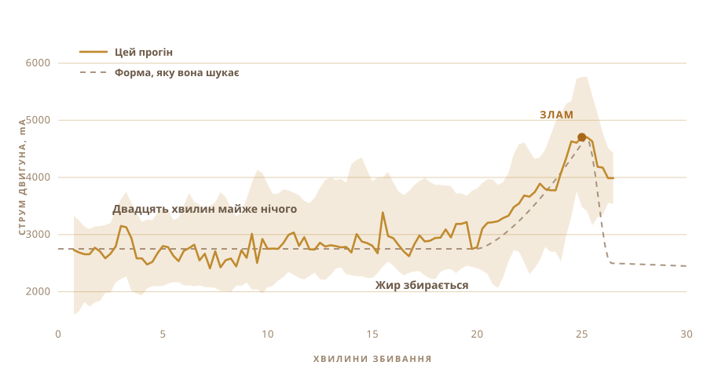

01
Я його тільки їв
Гхі, яке я знаю, приїжджало з сіл. У банках з-під чогось іншого, від людей, які роблять його одним і тим самим способом так давно, що там ніхто не вважає це вмінням.
На смак воно не схоже на банку з магазину.
А сам я не зробив жодної партії. Я не знав, скільки тримати молоко, яким холодним має бути кисляк і як має звучати каструля, коли все готово.
02
Усе починається з кисляку, а не з вершків
Промислове гхі майже завжди починається з вершків. Традиційний шлях починається на день раніше, іноді на два, з вершків, а насправді з увареного цільного молока, яке заквашують і лишають киснути на ніч.
Саме це скисання і є головним, бо без нього виходить просто топлене масло. Воно прекрасне, але це не гхі.

03
Два дні на столі
Тепле молоко, ложка вчорашнього кисляку, розмішати, і далі всю ніч не торкатися, нехай бактерії працюють. Моє простояло два дні.
Це ферментація, і це той крок, який промислова версія пропускає. Живі культури, переважно лактобактерії, розбирають лактозу і перетворюють її на молочну кислоту. Молоко густіє. Кисне. До ранку це вже інша речовина.
Звідси береться все добре. Розщеплена лактоза, яка легше засвоюється. Жири та білки, що стають доступнішими. Масляна кислота, та сама коротколанцюгова жирна кислота, на якій і живе слизова кишківника, і в гхі, зробленому так, її більше, ніж у гхі, збитому зі свіжих вершків.
Аюрведа прописує саме цю версію вже дуже давно.
Що я можу сказати точно, так це те, що запах дає закваска. Цей запах і є головна причина братися за все це.

04
У методу є назва
Білона. Кисляк у каструлю, туди опускається дерев’яна колотівка, і далі її гонять туди-сюди, поки масло не здасться і не зійде.
Колотівку я зробив сам. Ті, що я знайшов в інтернеті, були клеєні, і жоден продавець не сказав, що то за клей. Така штука півгодини стоїть у їжі, тож вгадувати я не збирався. Тверда деревина, нержавні гвинти, прикручено до валу мішалки, який і так лежав у мене в шухляді.
Чотири лопаті та сталевий обруч, що тримає їх під прямим кутом. Усе на гвинтах, тож розбирається назад.


Це займає близько півгодини, і майже весь цей час нічого цікавого не відбувається. Рівно та робота, яку мрієш передати комусь іншому.

05
І я спитав
Люди, які справді вміють це робити, не працюють за рецептами, і жодного з них не було в мене на кухні. Тож питання пішли у вікно чату.
Скільки заквашувати. Наскільки холодним тримати кисляк. З якою швидкістю можна крутити, поки тертя не нагріло каструлю і не зіпсувало масло. Кожна відповідь відкривала ще три.
А потім я поставив те питання, яке насправді мав на думці. Ти не міг би просто зробити це?
Питання перестало бути про те, як мені зробити гхі. Воно стало про те, чи не зробиш ти його за мене.
06
Звір
Акумуляторний дриль. Колотівка з шухляди та господарчого магазину. Пластиковий контейнер для електроніки, кухонна дошка замість хребта і велика жовта кнопка стоп, бо в усього, де є мотор, вона має бути.
Це майже нічого не коштувало, і це по ньому видно. І в цьому, власне, весь сенс.

- МоторАкумуляторний дриль у затискачі
- КолотівкаТверда деревина та нержавна сталь, зроблена, а не куплена
- МозокRaspberry Pi, пише раз на секунду
- ВідчуттяСтрум двигуна при збиванні, термодатчик при витоплюванні
- СтопОдна велика кнопка, розриває живлення
07
Крутити легко
Крутити кисляк може хто завгодно. Важко зрозуміти, коли зупинитися.
Зупинишся рано, отримаєш густу піну. Перекрутиш, і масло піде назад у маслянку, і ти його втратиш. Вікно зсувається залежно від жирності, температури і від того, як іде день.
Ніхто не засікає час. Це чути. Рівне хлюпання стає нерівним шльопанням, і ось тоді лізеш рукою.

08
Одне відчуття, і тільки одне
Тож я дав їй одне відчуття. Вона слідкує за тим, наскільки важко тягне мотор.
Двадцять хвилин нічого. Навантаження тримається близько 2700 mA і трохи гуляє. Потім жир починає збиратися, і дрилю доводиться продавлювати щось густіше. Навантаження піднімається до 4700, тримається там мить, а потім масло відпускає рідину і навантаження падає.
Ніякої камери, ніякої моделі, нічого розумного. Число, яке росте, а потім падає.

09
Вона зупинилася сама
Вона працювала. Я пішов робити інше, а коли повернувся, вона вже вимкнулася сама.
Блідо-жовте масляне зерно в мутній маслянці. Ніхто не сказав їй час. Вона вивела його з єдиного, що могла відчути.

10
Далі знову руками
Зібрати зерно і спресувати в кулю. Промивати холодною водою, раз за разом, поки вода не перестане йти мутною.
Кожна крапля маслянки, яку залишиш, згорить на наступному кроці. Цю частину я не автоматизував і не хотів.


11
Друге відчуття
Навантаження на мотор казало установці, коли зупинитися. Витоплювання ставить іншу задачу, бо тут шукаєш не момент, а намагаєшся його втримати.
Тому каструля йде на плитку з термодатчиком усередині, а регулятор потужності вмикає і вимикає плитку, щоб число лишалося там, куди ти його поставив. Я виставив 250 F, це близько 121 °C, і там воно простояло приблизно годину.
Людина, яка годину дивиться на каструлю, обов’язково відвернеться. Регулятору не буває нудно.

12
Година спостереження за кольором
Масло в каструлю, і далі воно здебільшого йде саме.
Воно тане. Воно шумно піниться білим. Вода википає, і шум стихає. Молочні білки осідають і буріють, а запах іде від масла до чогось підсмаженого. Коли каструля затихає і рідина йде прозорою, усе готово.
Я все одно дивився майже весь час, бо на це приємно дивитися. Але ніщо з того, що я робив, не змінило результат.


13
Гхі
Прозоре, бурштинове, і пахне як ті банки, з яких я їв у дитинстві. Це була єдина перевірка, яка в мене була, і воно її пройшло.

У банки воно пішло теплим і прозорим. До наступного дня застигло блідим і зернистим.
Я наклеїв на них етикетку. Слово на ній означає гхі непальською, а код поруч повертає на цю сторінку.

Перша партія, яку я зробив. Хоча зробив її не зовсім я.
14
Удруге дев’ять банок
Перший прогін дав дві банки, і це було все. Цей заповнив перила.
Дев’ять банок. Дві високі з гвинтовою кришкою ближче до камери, шість з бугельним замком посередині і одна маленька біля дальнього стовпа.

Етикетка тепер інша. На перших двох банках була рожева паперова, з написом OUR STORY згори. Ці з прозорої плівки, тож гхі просвічує з-за літер, а код поруч так само повертає на цю сторінку.


Воно застигло тим самим блідо-жовтим, що й перша партія, у чому я не був упевнений.
15
Що я хочу далі
Зараз машина знає дві речі. Коли перестати збивати і яку температуру тримати.
Далі я хочу дати їй очі та вуха. Камеру, щоб вона сама бачила, як опадає піна і буріє осад, і сама вибирала нагрів, а не тримала число, яке я їй дав. І мікрофон, бо готовність гхі багато в чому чути по тому, як затихає каструля.
Дриль, напевно, міг би взяти і другу зміну. Як тільки масло опиняється в каструлі, його треба мішати, а мотор там уже стоїть і нічого не робить.
А далі цикл. Поміняти час заквашування, поміняти швидкість, спробувати, що вийшло, лишити те, що спрацювало, і заново. Тридцять прогонів, і вона прийде туди, куди я б і не подумав подивитися.
Я все одно ніколи до кінця не знав, куди дивитися.
З чого вона зібрана, де відбувається вимірювання і за чим установка насправді слідкує.